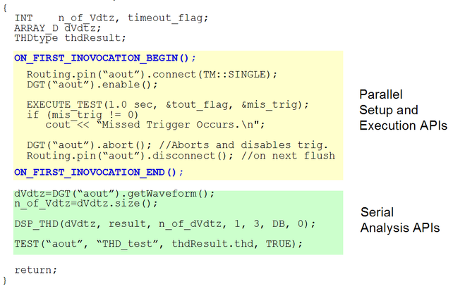

Multisite Programming Techniques
Test methods can be used for executing test suites in a multisite setup. The multisite test suites can be executed the following ways depending on how you set the test suite / test flow flags:
- Parallel
- Semi-parallel
- Serially
This is illustrated in the figure below.

This is explained in the sections Processing of Test Flow Blocks in a Multi-Site Setup and Setting Flags for Parallel Execution.
For fastest throughput, use parallel test suites where possible.
The following diagram shows the program flow of the test method program optimized for parallel execution.

When the test method program is executed for the first time, the first invocation block of the test method API runs. This block performs the following:
- Sets up the hardware for all sites
- Performs the tests in parallel for all sites together
- Stores the measurement data of all sites in a cache
In addition, the first run of the test method API continues beyond the end of the first invocation block and retrieves the data from the cache for the first site.
The next
time the API is run (second invocation), it jumps over the section between
ON_FIRST_INVOCATION_BEGIN(); and ON_FIRST_INVOCATION_END;()
and only retrieves the stored measurement data from the cache for site 2 (without needing to set
up its hardware or test it).
The program then uses this value to calculate, and judges the final result for this site as pass/fail.
With each further invocation, the measurement information from each of the other active sites is successively retrieved from the cache and evaluated.
For details of the Result API's behavior in multi-site testing, see also Measurement Data Management.
To implement a strategy like this you must access site information from within the test method program, for example:
- How many sites are there?
- Is this the first execution of the test method program in this test flow?
- What is the site for which results have to be returned?
This can be achieved using the APIs for multi-site testing.
For parallel execution of setup and test (measurement) for all sites at the first execution of the program, you must organize your code to be enclosed between the following two APIs:
These APIs enable parallel execution of all sites simultaneously. Therefore, you cannot access individual site information here. This is most important for multi-site programming of the test method.
To set up different data for each site see Controlling the Setup/Query-Focus Automatically.
Note that you can define multiple first-invocation blocks in a test method program. For example, if you need two DC tests in a test method-based test suite. This is explained at the end of the section Parallel Execution.
The section Parallel Execution also gives examples of how to set up appropriate test method codes.
Other APIs for the multi-site testing enable the following:
- Site-Specific Setup (Setup for each site independently)
- Controlling setup/query-focus states of each site automatically
- Controlling Setup-focus state of each site manually
For details on site-specific setup, see Site-Specific Setup.
- Getting the Site Numbers
- Currently-tested site number
- Configured site numbers
For details on getting the site numbers, see Getting the Site Numbers.
- Accessing Site-Specific Flags and User Variables
For details on accessing site-specific flags and user variables, see Accessing Site-Specific Flags and User Variables.
For more information on writing and setting up test method APIs see the manual, Test Method Reference.
The figure below shows the behavior of program execution in parallel execution.

In multi-site testing, the system generates the setup conditions for additional sites based on the primary setups, and they are downloaded automatically.
If you modify any condition of the setup data in the first-invocation block, the condition data for all sites will be overridden as well, and then activated.
However, if you wish to use different setup data for different sites, see Controlling the Setup/Query-Focus Automatically.
The primary setups are activated for all sites when the following APIs are executed in the first-invocation block.
The following APIs will become obsolete soon:
- SPEC_SEARCH(specName, specType).execute()
- Replace this with the API: SEARCH_FUNC_TASK
- DPS_VFIM(pin).execute()
- This is not supported for DC Scale cards, use DPS_TASK instead
Note that any modification of the setup condition outside the first-invocation block is also valid for all sites.
However, the modification is executed sequentially each time the program is executed for all sites. That is, all it does is slow down the execution of the testmethod-based testsuite.
Example
The following is an example of a parallel multisite test method using only the first invocation block.

In multi-site testing, the test method program can perform the following actions for all sites in parallel:
- Set up hardware
- Execute test